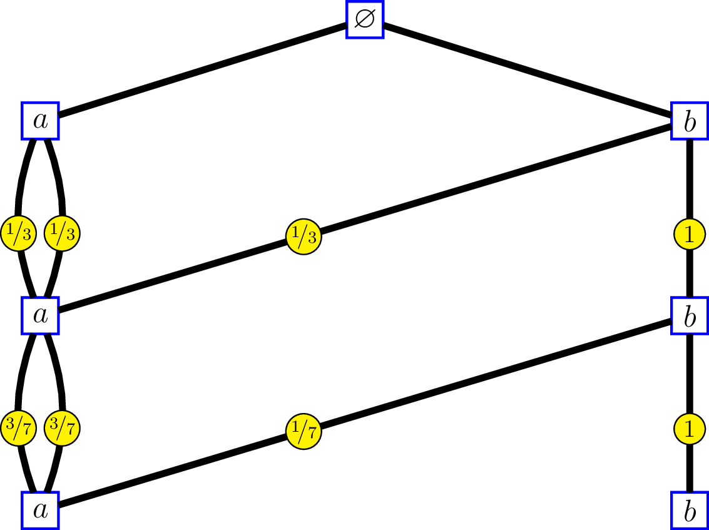
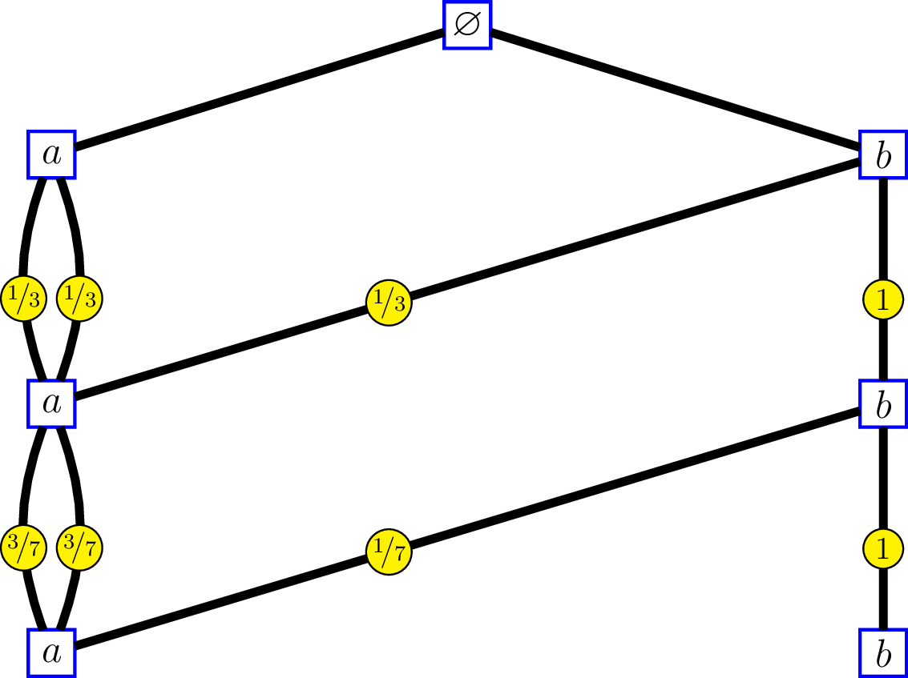

-
Bratteli graph: from simple to multiple edges
22 février 2016
SourceIn my research in mathematics, I deal with the filtration generated by a “random walk” on a Bratteli graph, whose distribution is a central measure, that is to say the transition distributions from a level to the above level are the central kernels. In some situations it is possible to replace the graph with another graph having multiple edges and less vertices.
Consider for instance the following Bratteli graph:


whose incidence matrices are \[ M_0=\begin{pmatrix} 1 & 1 & 1 & 1 \end{pmatrix}, \, \text{and } M_n = \begin{pmatrix} 1 & 0 & 1 & 0 \\ 1 & 0 & 1 & 0 \\ 1 & 0 & 1 & 0 \\ 0 & 1 & 0 & 1 \end{pmatrix}\, \text{for } n\geq 1. \]
The labels on the edges of the graph at the right side show the intrinsic kernels. We’ll come back later to that.
Observe that the first and thirds columns of \(M_n\) are the same: each of the two vertices \(1\) and \(3\) at level \(n\) are connected to vertices \(1\), \(2\) and \(3\) at level \(n-1\). The second and fourth columns are the same as well: each of the two vertices \(2\) and \(4\) at level \(n\) are connected to vertex \(4\) at level \(n-1\).
Identify an infinite path of this graph by a sequence of vertices \((v_1, v_2, \ldots)\), without including the root vertex which is useless.
On the other hand, consider the following Bratteli graph:
 

whose incidence matrices are \[ M_0 = \begin{pmatrix} 3 & 1 \end{pmatrix}, \, \text{and } M_n = \begin{pmatrix} 2 & 0 \\ 1 & 1 \end{pmatrix}\, \text{for } n\geq 1. \]
The edges of the graph at left side are labelled by the “order labels”.
For this graph, identify an infinite path by the sequence \(\bigl((v'_1, e_1), (v'_2, e_2), \ldots, \bigr)\) where \(v'_n\) is the vertex at level \(n\) and \(e_n\) is the label of the edge connecting \(v'_n\) and \(v'_{n+1}\). Then there is a correspondance between the set of sequences identifying the paths of the first graph and the set of sequences identifying the paths of the second. At each level \(n\):
- vertex \(v_n=\,\)\(1\) on the first graph corresponds to \((v'_n,e_n)=(a, 0)\)
- vertex \(v_n=\,\)\(2\) on the first graph corresponds to \((v'_n,e_n)=(b, 2)\)
- vertex \(v_n=\,\)\(3\) on the first graph corresponds to \((v'_n,e_n)=(a, 1)\)
- vertex \(v_n=\,\)\(4\) on the first graph corresponds to \((v'_n,e_n)=(b, 0)\)
At the right side, the labels on the edges show the intrinsic kernels. Consider a “random walk” \({(V_n)}_{n \geq 1}\) on the first graph, whose transitions from level \(n\) to level \(n-1\) are given by these kernels: \[ \begin{pmatrix} 1/3 & 1/3 & 1/3 & 0 \\ 0 & 0 & 0 & 1 \\ 1/3 & 1/3 & 1/3 & 0 \\ 0 & 0 & 0 & 1 \end{pmatrix}, \begin{pmatrix} 3/7 & 1/7 & 3/7 & 0 \\ 0 & 0 & 0 & 1 \\ 3/7 & 1/7 & 3/7 & 0 \\ 0 & 0 & 0 & 1 \end{pmatrix}, \ldots. \] and send \({(V_n)}_{n \geq 1}\) to a “random walk” \({(V'_n, \epsilon_n)}_{n \geq 1}\) on the second graph by the correspondance \(v_n \mapsto (v'_n,e_n)\) previously seen. Therefore the reversed filtrations generated by the two random walks are isomorphic, and the transitions of \({(V'_n, \epsilon_n)}_{n \geq 1}\) from level \(n\) to level \(n-1\) are given by the intrinsic kernels.
- Home
- About
- PoirotReproducible Blogging with R Markdown
- SlidifyReproducible html5 slides from R markdown
- R-bloggersBlog posts about R, contributed by R bloggers worldwide.
- stla.overblogMy previous blog
- Timely Portfolio A great blog about R, Javascript, and more